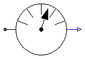
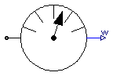
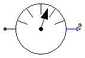
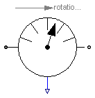
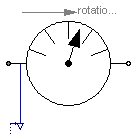
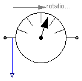

This package contains ideal sensor components that provide the connector variables as signals for further processing with the Modelica.Blocks library.
| Name | Description |
|---|---|
| AngleSensor | Ideal sensor to measure the absolute flange angle |
| SpeedSensor | Ideal sensor to measure the absolute flange angular velocity |
| AccSensor | Ideal sensor to measure the absolute flange angular acceleration |
| Ideal sensor to measure the relative angle between two flanges | |
| Ideal sensor to measure the relative angular velocity between two flanges | |
| Ideal sensor to measure the relative angular acceleration between two flanges | |
| TorqueSensor | Ideal sensor to measure the torque between two flanges (= flange_a.tau) |
| PowerSensor | Ideal sensor to measure the power between two flanges (= flange_a.tau*der(flange_a.phi)) |
 Modelica.Mechanics.Rotational.Sensors.AngleSensor
Modelica.Mechanics.Rotational.Sensors.AngleSensor
Measures the absolute angle phi of a flange in an ideal way and provides the result as output signal phi (to be further processed with blocks of the Modelica.Blocks library).
| Type | Name | Description |
|---|---|---|
| flange_a | flange to be measured | |
| output | phi | Absolute angle of flange |
model AngleSensor "Ideal sensor to measure the absolute flange angle"
extends Modelica.Icons.RotationalSensor;
Interfaces.Flange_a flange_a "flange to be measured";
Modelica.Blocks.Interfaces.RealOutput phi(redeclare type SignalType =
SI.Angle) "Absolute angle of flange";
equation
phi = flange_a.phi;
0 = flange_a.tau;
end AngleSensor;

Measures the absolute angular velocity w of a flange in an ideal way and provides the result as output signal w (to be further processed with blocks of the Modelica.Blocks library).
| Type | Name | Description |
|---|---|---|
| flange_a | flange to be measured | |
| output | w | Absolute angular velocity of flange |
model SpeedSensor
"Ideal sensor to measure the absolute flange angular velocity"
extends Modelica.Icons.RotationalSensor;
Interfaces.Flange_a flange_a "flange to be measured";
Modelica.Blocks.Interfaces.RealOutput w(redeclare type SignalType =
SI.AngularVelocity) "Absolute angular velocity of flange";
equation
w = der(flange_a.phi);
0 = flange_a.tau;
end SpeedSensor;

Measures the absolute angular acceleration a of a flange in an ideal way and provides the result as output signal a (to be further processed with blocks of the Modelica.Blocks library).
| Type | Name | Description |
|---|---|---|
| flange_a | flange to be measured | |
| output | a | Absolute angular acceleration of flange |
model AccSensor
"Ideal sensor to measure the absolute flange angular acceleration"
extends Modelica.Icons.RotationalSensor;
Interfaces.Flange_a flange_a "flange to be measured";
SI.AngularVelocity w "Absolute angular velocity of flange";
Modelica.Blocks.Interfaces.RealOutput a(redeclare type SignalType =
SI.AngularAcceleration) "Absolute angular acceleration of flange";
equation
w = der(flange_a.phi);
a = der(w);
0 = flange_a.tau;
end AccSensor;

Measures the relative angle phi_rel between two flanges in an ideal way and provides the result as output signal phi_rel (to be further processed with blocks of the Modelica.Blocks library).
| Type | Name | Description |
|---|---|---|
| flange_a | driving flange (flange axis directed INTO cut plane) | |
| flange_b | (right) driven flange (flange axis directed OUT OF cut plane) | |
| output | phi_rel | Relative angle between two flanges (= flange_b.phi - flange_a.phi) |
model RelAngleSensor
"Ideal sensor to measure the relative angle between two flanges"
extends Modelica.Icons.RotationalSensor;
Interfaces.Flange_a flange_a
"driving flange (flange axis directed INTO cut plane)";
Interfaces.Flange_b flange_b
"(right) driven flange (flange axis directed OUT OF cut plane)";
Modelica.Blocks.Interfaces.RealOutput phi_rel( redeclare type SignalType =
SI.Angle)
"Relative angle between two flanges (= flange_b.phi - flange_a.phi)";
equation
phi_rel = flange_b.phi - flange_a.phi;
0 = flange_a.tau;
0 = flange_b.tau;
end RelAngleSensor;
Measures the relative angular velocity w_rel between two flanges in an ideal way and provides the result as output signal w_rel (to be further processed with blocks of the Modelica.Blocks library).
| Type | Name | Description |
|---|---|---|
| flange_a | driving flange (flange axis directed INTO cut plane) | |
| flange_b | (right) driven flange (flange axis directed OUT OF cut plane) | |
| output | w_rel | Relative angular velocity between two flanges (= der(flange_b.phi) - der(flange_a.phi)) |
model RelSpeedSensor
"Ideal sensor to measure the relative angular velocity between two flanges"
extends Modelica.Icons.RotationalSensor;
Interfaces.Flange_a flange_a
"driving flange (flange axis directed INTO cut plane)";
Interfaces.Flange_b flange_b
"(right) driven flange (flange axis directed OUT OF cut plane)";
SI.Angle phi_rel
"Relative angle between two flanges (flange_b.phi - flange_a.phi)";
Modelica.Blocks.Interfaces.RealOutput w_rel( redeclare type SignalType =
SI.AngularVelocity)
"Relative angular velocity between two flanges (= der(flange_b.phi) - der(flange_a.phi))";
equation
phi_rel = flange_b.phi - flange_a.phi;
w_rel = der(phi_rel);
0 = flange_a.tau;
0 = flange_b.tau;
end RelSpeedSensor;
Measures the relative angular acceleration a_rel between two flanges in an ideal way and provides the result as output signal a_rel (to be further processed with blocks of the Modelica.Blocks library).
| Type | Name | Description |
|---|---|---|
| flange_a | driving flange (flange axis directed INTO cut plane) | |
| flange_b | (right) driven flange (flange axis directed OUT OF cut plane) | |
| output | a_rel | Relative angular acceleration between two flanges |
model RelAccSensor
"Ideal sensor to measure the relative angular acceleration between two flanges"
extends Modelica.Icons.RotationalSensor;
Interfaces.Flange_a flange_a
"driving flange (flange axis directed INTO cut plane)";
Interfaces.Flange_b flange_b
"(right) driven flange (flange axis directed OUT OF cut plane)";
SI.Angle phi_rel
"Relative angle between two flanges (flange_b.phi - flange_a.phi)";
SI.AngularVelocity w_rel "Relative angular velocity between two flanges";
Modelica.Blocks.Interfaces.RealOutput a_rel( redeclare type SignalType =
SI.AngularAcceleration)
"Relative angular acceleration between two flanges";
equation
phi_rel = flange_b.phi - flange_a.phi;
w_rel = der(phi_rel);
a_rel = der(w_rel);
0 = flange_a.tau;
0 = flange_b.tau;
end RelAccSensor;

Measures the cut-torque between two flanges in an ideal way and provides the result as output signal tau (to be further processed with blocks of the Modelica.Blocks library).
| Type | Name | Description |
|---|---|---|
| flange_a | ||
| flange_b | ||
| output | tau | Torque in flange flange_a and flange_b (= flange_a.tau = -flange_b.tau) |
model TorqueSensor
"Ideal sensor to measure the torque between two flanges (= flange_a.tau)"
extends Modelica.Icons.RotationalSensor;
Interfaces.Flange_a flange_a;
Interfaces.Flange_b flange_b;
Modelica.Blocks.Interfaces.RealOutput tau( redeclare type SignalType =
SI.Torque)
"Torque in flange flange_a and flange_b (= flange_a.tau = -flange_b.tau)";
equation
flange_a.phi = flange_b.phi;
flange_a.tau = tau;
flange_b.tau = -tau;
end TorqueSensor;

Measures the power between two flanges in an ideal way and provides the result as output signal power (to be further processed with blocks of the Modelica.Blocks library).
| Type | Name | Description |
|---|---|---|
| flange_a | ||
| flange_b | ||
| output | power | Power in flange flange_a |
model PowerSensor
"Ideal sensor to measure the power between two flanges (= flange_a.tau*der(flange_a.phi))"
extends Modelica.Icons.RotationalSensor;
Interfaces.Flange_a flange_a;
Interfaces.Flange_b flange_b;
Modelica.Blocks.Interfaces.RealOutput power( redeclare type SignalType =
SI.Power) "Power in flange flange_a";
equation
flange_a.phi = flange_b.phi;
0 = flange_a.tau + flange_b.tau;
power = flange_a.tau*der(flange_a.phi);
end PowerSensor;